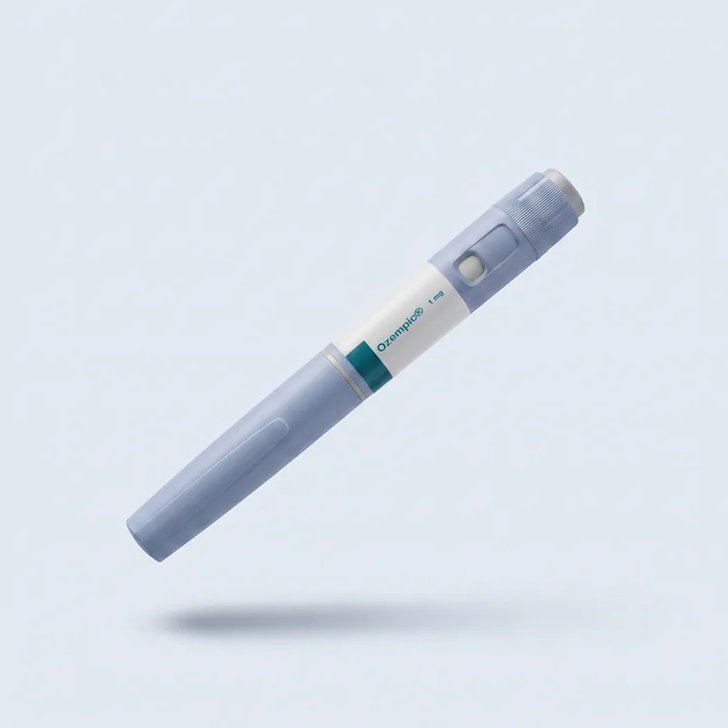

Контроль апетиту
Вплив на центри голоду в головному мозку та шлунково-кишковий тракт.
- Зменшує відчуття голоду та об'єм порцій
- Уповільнює спорожнення шлунка
- Знижує тягу до перекусів
Препарат класу GLP-1 для контролю апетиту та стійкого зниження ваги під наглядом лікаря.

Формат терапії
Оригінальний семаглутид Novo Nordisk. Формат підбирається лікарем залежно від ваших цілей та досвіду самостійних ін'єкцій.
| Критерій | Ручка Ozempic® | Програма з супроводом |
|---|---|---|
| Формат | Оригінальна ручка-ін'єктор Novo Nordisk | Індивідуальний курс під наглядом спеціаліста |
| Зручність | Самостійне щотижневе введення вдома | Контроль дози, титрування та підтримка |
| Дозування | Поступове титрування: 0,25 → 0,5 → 1 мг | Підбір дози за показаннями та переносимістю |
| Вартість | 12 000 ₴ (ручка 1 мг) | За прайсом клініки |
Перед стартом — обов'язкова консультація лікаря. Повний прайс
Механізм дії
Семаглутид імітує дію природного гормону GLP-1, який утворюється після їжі та регулює апетит і метаболізм.
Вплив на центри голоду в головному мозку та шлунково-кишковий тракт.
Покращення контролю глюкози та чутливості до інсуліну (за даними клінічних досліджень).
Безпека
Перед початком терапії обов'язкова консультація лікаря та оцінка анамнезу.
Алергія або підвищена чутливість до семаглутиду
Медулярний рак щитоподібної залози (власний або сімейний анамнез)
Синдром множинної ендокринної неоплазії 2 типу (MEN2)
Цукровий діабет 1 типу (Ozempic® не призначають при ЦД1)
Вагітність та період грудного вигодовування
Тяжкі порушення функції печінки або нирок
ІМТ менше 27 — перевірте свій ІМТ
Гострий панкреатит у стадії загострення
Інформація не є медичним діагнозом. Лікар оцінить ваш стан індивідуально. Джерела: інструкція Ozempic® (FDA / DailyMed).
Інструкція
Рекомендації згідно з офіційною інструкцією Novo Nordisk для ручки Ozempic®.
Підшкірно в живіт, стегно або плече. Кожного тижня — нове місце введення.
1 раз на тиждень, у будь-який час доби, з їжею або без. Пропущену дозу вводять протягом 5 днів.
До першого використання: +2…+8 °C. Після відкриття — до 56 днів при кімнатній температурі або в холодильнику. Не заморожувати.
Оригінальна ручка Ozempic® 1 мг — 12 000 ₴. Програма з супроводом спеціаліста — за прайсом клініки. Перед стартом — обов'язкова консультація лікаря. Повний прайс — у розділі «Ціни».
Дозу підвищують поступово: 0,25 → 0,5 → 1 мг. У програмі з супроводом лікар підбирає дозу за показаннями та переносимістю і контролює титрування.
1 раз на тиждень, у будь-який час доби, з їжею або без. Підшкірно в живіт, стегно або плече; кожного тижня — нове місце введення.
Згідно з інструкцією Novo Nordisk, пропущену дозу вводять протягом 5 днів. Якщо сумніваєтеся — напишіть спеціалісту, він на зв'язку 24/7.
До першого використання — у холодильнику при +2…+8 °C. Після відкриття — до 56 днів при кімнатній температурі або в холодильнику. Не заморожувати.
Ozempic® (семаглутид) діє на рецептор GLP-1. Mounjaro® (тирзепатид) — препарат подвійної дії: GLP-1 та GIP. Який препарат підходить саме вам, визначає лікар на консультації. Детальніше про Mounjaro®
Серед протипоказань — медулярний рак щитоподібної залози (власний або сімейний анамнез), синдром MEN2, цукровий діабет 1 типу, вагітність і грудне вигодовування, гострий панкреатит у стадії загострення, ІМТ менше 27. Повний перелік — у блоці «Протипоказання» вище.
Так. Відправляємо в термобоксі з акумулятором холоду, щоб препарат доїхав у правильній температурі. Серію та термін придатності показуємо до оплати.
Лікар оцінить показання, підбере стартову дозу та супроводжуватиме титрування.